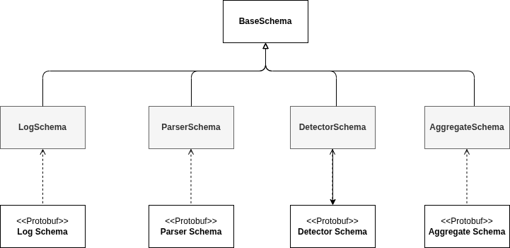

Schemas
Schemas are the typed message objects used to transmit data between components (Parser → Detector). Each schema class wraps a Protobuf message and provides a small, convenient Python API for creation, inspection, (de)serialization and validation.
This document summarizes the available schema classes, the BaseSchema API and common usage patterns.
Design goals
- Strongly-typed contracts between components.
- Lightweight wrapper over generated Protobuf types.
- Simple API for tests and runtime wiring.
- Safe (de)serialization for transport and persistence.
Architecture
Schemas are used to transfer data between components. Each schema implements the methods defined in BaseSchema. This class acts as a wrapper around the underlying Protobuf classes (op.SchemaT).

All concrete schema classes inherit from BaseSchema. Key utility methods:
class BaseSchema:
def __contains__(self, idx: str) -> bool:
"""Return if a variable is in the schema"""
def as_dict(self) -> dict[str, Any]:
"""Return the schema variables as a dictionary."""
def get_schema(self) -> op.SchemaT:
"""Retrieve the current schema instance."""
def set_schema(self, schema: op.SchemaT) -> None:
"""Set the schema instance and update attributes."""
def init_schema(self, kwargs: dict[str, Any] | None) -> None:
"""Initialize the schema instance and set attributes."""
self.var_names = set(var_names)
def is_field_list(self, field_name: str) -> bool:
"""Check if a field is a list."""
def copy(self) -> "BaseSchema":
"""Create a deep copy of the schema instance."""
def serialize(self) -> bytes:
"""Serialize the schema instance to bytes."""
def deserialize(self, message: bytes) -> None | op.IncorrectSchema:
"""Deserialize bytes to populate the schema instance."""
def check_is_same(self, other: Self) -> None | op.IncorrectSchema:
"""Check if another schema instance is of the same schema type."""
def __eq__(self, other: object) -> bool:
"""Check equality between two schema instances."""
Schema Clases
Below are the primary schema classes and their main fields. All fields are optional at the Protobuf level; components should document which fields they require.
LogSchema
Represents a raw log message.
Fields:
| Field | Type | Notes |
|---|---|---|
| logID | string | Unique identifier for the raw log. |
| log | string | Raw log text. |
| logSource | string | Source of the log (file, topic, etc.). |
| hostname | string | Hostname where log originated. |
ParserSchema
Output of a Parser. Contains parsed fields and template information.
Fields:
| Field | Type | Notes |
|---|---|---|
| parserType | string | Parser type. |
| parserID | string | Parser instance identifier. |
| EventID | int32 | Template/event identifier. |
| template | string | Event template text. |
| variables | repeated string | Parameters extracted from the template. |
| parsedLogID | string | ID assigned after parsing (optional). |
| logID | string | Original raw log ID (link to LogSchema). |
| log | string | Raw log text. |
| logFormatVariables | map |
Key/value pairs from format extraction. |
| receivedTimestamp | int32 | Timestamp when log was received. |
| parsedTimestamp | int32 | Timestamp when parsing completed. |
DetectorSchema
Output from Detectors (alerts / findings).
Fields:
| Field | Type | Notes |
|---|---|---|
| detectorID | string | Detector instance identifier. |
| detectorType | string | Type/name of detector. |
| alertID | string | Unique alert identifier. |
| detectionTimestamp | int32 | When the alert was produced. |
| logIDs | repeated string | IDs of logs related to the alert. |
| score | float | Confidence/score (if applicable). |
| extractedTimestamps | repeated int32 | Timestamps extracted from logs. |
| description | string | Human-readable description of the alert. |
| receivedTimestamp | int32 | When inputs were received by detector. |
| alertsObtain | map |
Additional alert metadata. |
AggregateSchema
Output from Alert Aggregations (alerts / findings).
Fields:
| Field | Type | Notes |
|---|---|---|
| detectorIDs | repeated string | List of detector instance identifier. |
| detectorTypes | string | List of type/name of detectors. |
| alertIDs | string | repeated list of unique alert identifier. |
| outputTimestamp | int32 | When the aggregation was produced. |
| logIDs | repeated string | IDs of logs related to the alerts. |
| extractedTimestamps | repeated int32 | Timestamps extracted from logs. |
| description | string | Human-readable description of the alert aggregation. |
| alertsObtain | map |
Additional alert metadata from the alert aggregation. |
Tutorial
Small tutorials of the different schemas.
Initialize a schema
from detectmatelibrary import schemas
kwargs = load_somewhere() # load the dict
kwargs["log"] = "Test log"
log_schema = schemas.LogSchema(kwargs)
print(log_schema.log == "Test log") # True
Assign values
from detectmatelibrary import schemas
log_schema = schemas.LogSchema()
log_schema.log = "Test log"
print(log_schema["log"] == log_schema.log) # True
log_schema2 = schemas.LogSchema()
print(log_schema == log_schema2) # False
log_schema2.log = "Test log"
print(log_schema == log_schema2) # True
Serialization
from detectmatelibrary import schemas
log_schema = schemas.LogSchema()
log_schema.log = "Test log"
serialized = log_schema.serialize()
print(isinstance(serialized, bytes)) # True
new_log_schema = schemas.LogSchema()
new_log_schema.deserialize(serialized)
print(new_log_schema.schema_id == log_schema.schema_id) # True
Go back Index